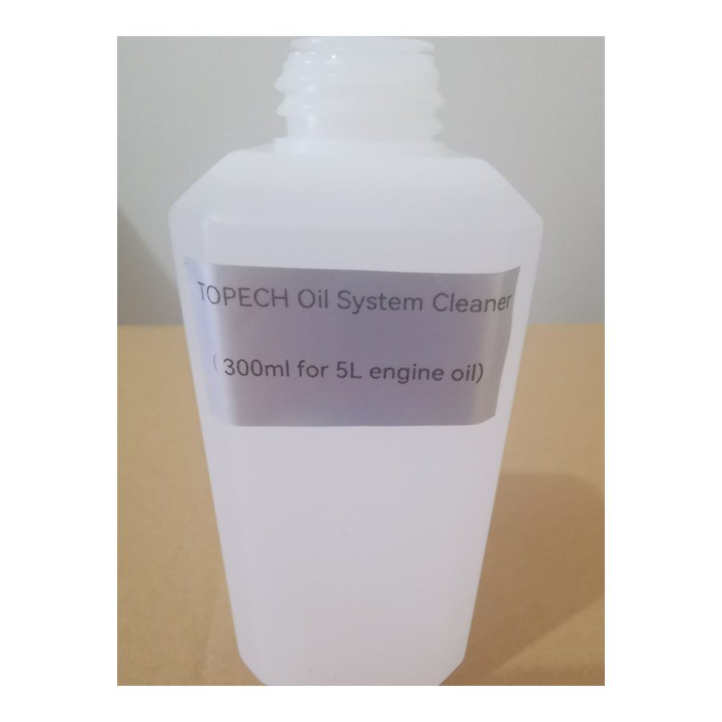

| Volume | 300 ml |
|---|---|
| Coverage | Up to 5 liters of oil, or 1:15 mixing ratio |
| Exposure Time | ≈ 15 minutes at idle |
| Functions | Dissolves carbon & varnish-tar deposits; neutralizes oil oxidation |
| Repairs | Releases coked piston rings and stuck hydraulic lifters |
| Protection | High-performance lubricants protect the system during cleaning |
| Scope | 4-stroke engines, diesel engines, manual gearboxes, differentials |
| Benefits | Fuel economy, increased output, emission compliance, catalyst life |
Add to warm old oil before changing — 15 minutes idle, then drain and refill.
Free stuck rings and lifters to restore compression and reduce oil consumption.
Quick, safe upsell service for garages and oil change stations.
Also effective for manual transmission and differential oil systems.
Buy straight from the manufacturer. Competitive wholesale pricing for distributors, labs and bulk orders — OEM labeling available.
Designed and tested against ASTM, GB/T, SH/T and ISO methods for reliable, repeatable oil product quality assurance.
Export-grade wooden case packaging with worldwide delivery via air / sea freight. Sample units ship within 3–5 business days.
Operation manuals, test videos and remote engineering support for the entire product lifecycle from our technical team.